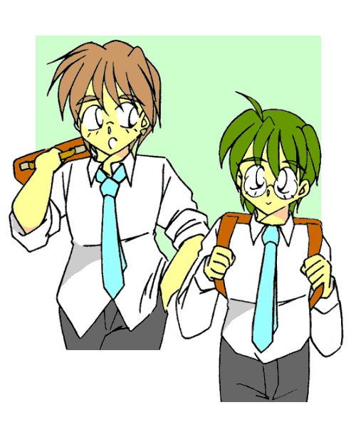

ゴロゴロゴロゴロゴロ……ピシャァァァァァン！
「うわっと！？」
ザァァァァァァァァァ……。
突然の雷鳴とともに、大雨が降り出した。
「参ったな……今から買い物だってのに」
仕方なく僕は玄関にあった傘を開いて、雨の中を商店街に向かい走り出した。
-Yesterday-
「明後日から学習合宿だ。参加する生徒は各自必要なものをこの休みで準備しておくこと。以上だ」
そうして担任の先生が教室を出てゆき、S.H.R.が終わった。
私立秋宮高校。
都内でも有名な進学校で、僕こと桐生凛（きりゅうりん）はそこの二年生だったりする。
名前だけではどちらかといえば女性だけど、僕はれっきとした男なのだ。
ひょいっ。
「うわっ！？」
突然後ろから手が伸びてきて、僕の眼鏡を取り去った。
「なーにボーッとしてんだよ、凛。さっさと帰ろうぜ」
「あ……亮輝か。ごめん、すぐ支度するよ」
後ろにいたのは、美作亮輝（みまさかりょうき）。
学校で最もカッコイイとされる人で、人付き合いもよく（女とはまたすごいらしい）、こういう奴にありがちな高飛車さを全く持ち合わせていない聖人のような男だ。
見た目は嵐の松本潤にそっくりで、身長は180cmを越えている。
160cmギリギリしかない僕が見上げる形になる。
……全くうらやましくない、と言えば嘘になるだろうか。
ともかく、そんな凄い人間が、どういうわけだか僕の数少ない親友の一人をやっていたりするのだ。
「お待たせ、さぁ帰ろう」
「OK」
僕達は一緒に教室を出た。
「なぁ、凛」
「ん？」
帰宅途中の路地で、突然亮輝が口を開いた。
「お前さ、明後日の学習合宿出るの？」
「ああ――」
学習合宿。
それは、うちの高校が毎年５月、二年生を対象として行っている「お泊り勉強会」である。
都内を離れ、北側の静かで涼しげな村にある宿泊施設でＧＷをほぼ返上しての勉強となるので、参加する生徒は多くは無い。
しかし、僕としては日頃勉強も出来ていないし、来年は受験だから今のうちから準備しようと思っていた。
「うん、出るよ。そういう亮輝はどうなのさ？」
「俺か？ 俺も出るぜ。ちゃんと基礎基本が出来てなきゃいけないと思ってな」
亮輝は全く勉強しない性質らしい。
しかし、それでもテストは高得点を取り成績優秀・スポーツ万能と天才児を地で行く男だから、合宿なんて出ないと思ってた。だから、この発言には驚いた。
「へぇ……なら、一緒の部屋になれるといいね」
「ああ、そだな」
宿泊施設は広くなく、生徒二人に一つの部屋が割り当てられるようになっている（当然男女別）。
友達の少ない僕としては、出来るだけ親しい人と一緒になりたかったからこれは渡に船、といえるだろう（用法が違う気もするけど）。
「あ、そういえば、あそこの施設、シャンプーとか石鹸ももってかなきゃいけないらしいぜ」
「え、そうなの？」
普通はあちらさんが用意してくれるものだと思ったけど。
「いやなんでもな、去年あっちで用意したシャンプーがあわなくて頭皮がかぶれちまった奴がいたんだとさ。だから今年からそれ系は持参することになったんだとよ」
へぇ、そんなことがあったのか。
「けど困ったな。だったら新しいの買わないと。うち、そういうの共用してるから」
「へぇ、そうなの？ 明日奈ちゃんも一緒に使ってるのかよ？」
「明日奈は、そういうの気にしないタイプなんだ」
明日奈というのは、僕の妹だ。
性格に多少難があるけど、外面のよい彼女は周りにそのことが知られていない。
「へぇ、ちっと変わってんだな」
……そうだろか？
でも、人それぞれ、家族それぞれだと思う。
「いいじゃないか、そんなこと」
「ああ、悪い悪い。別に悪気があって言ったわけじゃないんだ。許せ」
ポリポリと鼻の頭を掻きながら謝る亮輝。
自分の非を認め、謝ることが出来るのも彼のえらい所だと思う。

いらすとれいてっど：MONDO様
そんな話をしているうちに、十字路へとたどり着いた。
ここから向かって左に亮輝の、まっすぐに僕の家がある。
「じゃぁな、凛。明後日会おうぜ」
「うん。またね、亮輝」
そう僕らは言って、互いの家路に着くことにした。
-Today-
ザァァァァァァァァ……。
「はぁ、はぁ、はぁ、はぁ……」
降りしきる大雨。
その中を僕は、ビニール袋引っさげて必死に駆けずり回っていた。
「……くそっ、なんでボディソープがどこにもおいてないんだ」
悪態をつきつつ、僕は商店街をまわる。
シャンプーや歯ブラシといったものは買えたのだが、何故だかどの店にもボディソープが置いてなかった。
なら石鹸でいいじゃん、と思うそこの君。
……我が家は液体派（？）なのだ。
そんなこんなで走り回っていた僕は、ある一軒のお店の前で立ち止まった。
「薬屋”帝枝須”……身体用液体洗剤売っています？」
そのお店には、そう書いてあった。
まさにかゆいところに手が届くような（何かまた使い方がおかしい気がするけど）店だ。
しかし、かなり怪しい。
まず、見た目は小さなお化け屋敷のよう。
窓から覗くと、明かりは蝋燭のようで、薄暗い。
何より、こんな所に建物があったっけ……？
「……考えてる暇はないか」
日没が近い。それに、雨も激しい。
僕は意を決して、その中へと入ることにした。
「お邪魔しまーーす……」
ギィ、ときしむドアを開け、僕は店内に入り込んだ。
思ったとおり、光源は蝋燭のみ。
いくつも並んだ壷に、棚に並べられた大小様々な形状をした瓶。
薬屋というよりむしろそこは、骨董品屋をイメージさせるようなところだった。
「……いないのかな？」
まっすぐ奥に見える、カウンター──机が並べてあるだけなのだが、レジスタが置いてあるから間違いないだろう──には誰もいなかった。
しかし、留守ならCloseとでも貼り出しておいて欲しいものだ。
仕方なく、僕は帰ろうと後ろを振り向く。
「いらっしゃいませ！」
「！？」
突然後ろ──先ほどまで誰もいなかったはず──から声をかけられ、僕は驚いて後ずさりしてしまう。
「あ、驚かせてしまってごめんなさい。私はここの店主です」
そう言ってペコリと頭を下げたのは、見た目１０歳くらいの少女だった。
長く黒い髪の毛。しかし前髪も長くて目が隠れてしまっていて、表情は分かり辛い。
店員の制服というよりむしろメイドのそれに近い格好をしていて、なんだか違和感があった。
「あの……どうなさいました？」
少女が話し掛けてきて、僕ははっと我に返った。
「あ、いや、なんでもないんだ。えっと……君がここの店主なんだよね」
「ええ、そうですよ。申し訳ございませんがこの世界では名前は明かすことはできません。ご了承くださいな」
そう言って不思議な少女はお辞儀をした。
「あ……そ、そうなんだ」
なぜか疑うことも出来ずに、僕はうなずいてしまった。
「それで、お客様。今日は何をお求めになられで？」
「あ、ああ。表に書いてあったんだけど、ボディソープ、売ってもらえないかな？」
僕は求めているものを言った。
「ボディソープ、ですか……あることにはあるんですけど……」
少女は言いよどむ。
……？ なんだろう？
「あの……どうしたの？ 無いんだったらいいんだけど……」
僕が声をかけると、少女は慌てて、
「あ、いえっ！ ありますよ！ 今持ってきますので、少々お待ちください！」
そう言って、カウンター奥のドアの中へと消えていった。
しばらくして、少女は一つの小さな瓶を抱えて戻ってきた。
「お待たせいたしました！ はい、どうぞ」
そういって少女は僕にそれを手渡した。
それは、どこの国の言葉だろうか、全く僕には分からない文字で書かれたラベルが貼ってある、小さな瓶だった。
「これが……ボディソープなの？」
「はい。……如何なさいましたか？」
不安げに顔を覗き込んでくる少女。
しまった。今の一瞬が彼女に不安感を与えたらしい。
「ああ、いや……結構小さいなって」
そのサイズたるや、小さな僕の手にもすっぽり覆い尽くされてしまうほどである。
あって１、２回。まさに旅行用といったところか。
「あ……申し訳ありませんっ。何分手作りな上に、作られる量が限られていますので……」
本当に申し訳なさそうにペコペコと謝ってくる少女。
なんだか……それが自分のせいに思えて仕方が無かった。
「そ、そんなに謝ることじゃないよ。うん、これ気に入った。これ、買うよ」
そう言うと、少女はとたんに元気になり、
「本当ですか！？ ありがとうございます！ では、こちらへ」
そう言って、スカートと長い黒髪をなびかせカウンターの方へと走っていった。
そしてそこにあるレジスタをちょちょいとつつき、チーンという音とともに銭入れが開き、金額が表示される。
「お買い上げありがとうございますー。一点で、６００円となります」
「ん……はい」
僕は財布から６００円を取り出し、彼女に手渡した。
あのサイズで６００円は割高もいいところだが、彼女の手作りであるということならば、それ相応の効果があるのだろう。
「ありがとうございます！ お帰りは、あちらです！」
そう言って少女は今度は玄関まで行き、扉を開けてくれた。
「あ、ありがとう。また来るよ」
僕はそう微笑みながら言った。
「はい、またいつか」
少女がそう言ったのを聞いて、僕は降りしきる雨の中、傘を差して商店街を走り出した。
「今までのその御身体……けして忘れなさらぬように……」
雨の音にまぎれて。
少女の呟きが僕の背中に聞こえた。
あとがき
こんにちは。マコトです。
自分のHP上で公開しているものを、今回こちらの方へ投稿させていただきました。
…未完成で3話から先が書けてませんがｗ
この小説、本来はボディソープを売りつけた少女を主体として、様々な薬品によって人を性転換させていくものとして書くつもりでした。
けどそれじゃ「なんとなくあの子に被るなー」と思いましてｗ
現在の、凛君を主人公としたものに変更しました。
（余談ですけど、この”帝枝須”店員の少女にはちゃんとした名前があるんですよ♪）
まだ今回はプロローグに過ぎませんが、次回をお楽しみにしておいてくださいな♪
それでは〜。
□ 感想はこちらに □